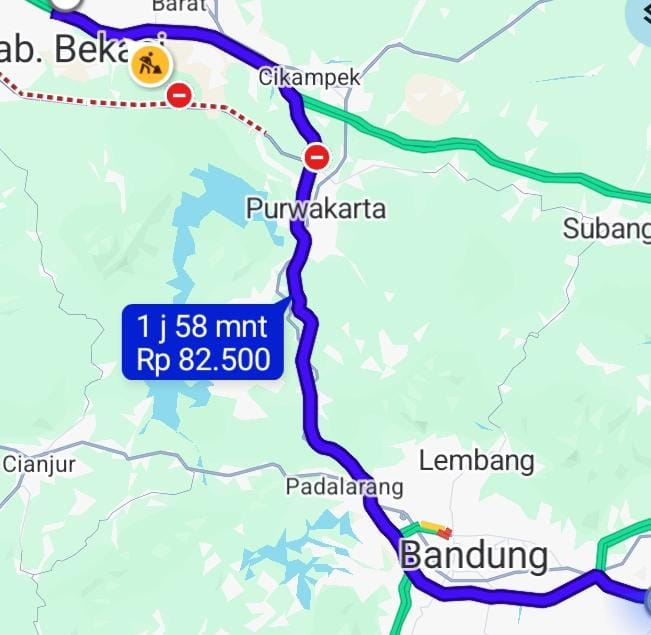

Ekspedisi Bandung Cikarang 1 Hari Sampai: Solusi Pengiriman Cepat untuk Bisnis dan Perusahaan

Kebutuhan pengiriman barang dari Bandung ke Cikarang semakin penting seiring berkembangnya aktivitas perdagangan, industri, manufaktur, dan bisnis di wilayah Jawa Barat. Tidak sedikit perusahaan yang membutuhkan pengiriman dokumen, sampel produk, komponen mesin, hingga barang operasional dalam waktu singkat.
Bagi pengirim yang sedang mencari ekspedisi Bandung Cikarang 1 hari sampai, memilih layanan pengiriman prioritas dapat menjadi salah satu solusi. Lion Parcel menyediakan pilihan layanan pengiriman prioritas dengan estimasi 1–2 hari sampai, tergantung rute dan ketentuan layanan.
Melalui Lion Parcel Bandung POS101 Nanjungmekar Rancaekek, pelanggan dari Bandung Timur dan sekitarnya dapat berkonsultasi mengenai pilihan pengiriman ke Cikarang, Kabupaten Bekasi, serta kawasan industri di sekitarnya.
Butuh Ekspedisi Cepat Bandung ke Cikarang?
Ingin mengirim dokumen, paket perusahaan, sampel produk, atau barang kebutuhan operasional ke Cikarang? Hubungi Lion Parcel Bandung POS101 untuk mengecek pilihan layanan dan estimasi pengiriman.
💬 Chat WhatsApp 0851-8309-04861. Pengiriman Bandung ke Cikarang untuk Kebutuhan Bisnis
Bandung dan Cikarang merupakan dua kawasan yang mempunyai aktivitas ekonomi cukup tinggi di Jawa Barat. Bandung dikenal dengan kegiatan perdagangan, industri kreatif, tekstil, konveksi, dan berbagai usaha lainnya.
Sementara itu, Cikarang merupakan salah satu kawasan industri penting di Kabupaten Bekasi. Berbagai perusahaan manufaktur, industri otomotif, elektronik, logistik, dan pergudangan beroperasi di kawasan ini.
Hubungan bisnis antara kedua wilayah tersebut menciptakan kebutuhan pengiriman barang secara rutin.
Beberapa jenis pengiriman yang umum dibutuhkan antara lain:
- Dokumen perusahaan: Surat administrasi, dokumen kerja sama, dan berkas operasional.
- Sampel produk: Contoh kain, pakaian, produk konveksi, dan barang untuk kebutuhan pemeriksaan kualitas.
- Spare part mesin: Komponen dan suku cadang untuk kebutuhan perawatan mesin industri.
- Produk perdagangan: Barang dagangan dari supplier Bandung untuk pelanggan atau perusahaan di Cikarang.
- Paket kebutuhan operasional: Barang pendukung kegiatan produksi dan aktivitas perusahaan.
Untuk kebutuhan yang mendesak, pengirim dapat mempertimbangkan layanan prioritas agar paket memperoleh pilihan penanganan sesuai ketentuan produk pengiriman yang digunakan.
2. Apakah Ekspedisi Bandung Cikarang Bisa 1 Hari Sampai?
Salah satu pertanyaan yang sering muncul ketika seseorang ingin mengirim paket antarkota adalah apakah barang bisa tiba pada hari berikutnya.
Jawabannya bergantung pada jenis layanan, lokasi asal dan tujuan, jadwal keberangkatan, waktu penyerahan paket, serta kondisi operasional pengiriman.
Lion Parcel memiliki layanan BOSSPACK sebagai layanan pengiriman prioritas dengan estimasi 1–2 hari sampai. Estimasi tersebut merupakan acuan layanan dan bukan berarti semua pengiriman Bandung ke Cikarang otomatis tiba tepat satu hari.
Untuk mengetahui apakah alamat penerima di Cikarang dapat menggunakan layanan prioritas, pelanggan perlu melakukan pengecekan berdasarkan kode pos dan alamat lengkap penerima.
Hal-hal yang perlu diperhatikan sebelum memilih pengiriman cepat:
- Pastikan alamat penerima dan kode pos sudah benar.
- Tanyakan ketersediaan layanan prioritas untuk tujuan Cikarang.
- Perhatikan batas waktu penerimaan paket atau cut-off pengiriman.
- Pastikan barang sudah dikemas dan siap dikirim sebelum diserahkan.
- Perhitungkan hari libur dan kemungkinan kendala operasional.
Jika pengiriman benar-benar mendesak, sebaiknya konfirmasikan estimasi terlebih dahulu kepada agen sebelum menyerahkan barang.
3. Mengenal BOSSPACK, Layanan Prioritas Lion Parcel
BOSSPACK merupakan layanan pengiriman prioritas Lion Parcel yang ditujukan untuk pelanggan yang membutuhkan pengiriman lebih cepat.
Layanan ini dapat menjadi salah satu pilihan untuk kebutuhan pengiriman antarkota, termasuk ketika pelanggan ingin mengecek opsi pengiriman dari Bandung menuju wilayah Cikarang.
Beberapa hal yang perlu diketahui mengenai layanan prioritas:
- Prioritas pengiriman: Dirancang untuk kebutuhan pengiriman yang mengutamakan kecepatan.
- Estimasi 1–2 hari: Mengikuti ketentuan layanan dan cakupan rute yang tersedia.
- Pelacakan paket: Pengirim dapat memantau perjalanan paket menggunakan nomor resi.
- Pilihan untuk kebutuhan bisnis: Dapat dipertimbangkan untuk dokumen, sampel, dan paket operasional yang memenuhi ketentuan pengiriman.
Lion Parcel juga memiliki ketentuan PASTI atau Paket Telat Sehari, Ongkir Diganti pada layanan dan pengiriman yang memenuhi syarat serta ketentuan program. Pelanggan sebaiknya menanyakan ketentuan yang berlaku sebelum melakukan transaksi.
Informasi produk layanan dapat diperiksa melalui situs resmi: Lion Parcel - Produk dan Layanan Pengiriman .
4. Kawasan Cikarang yang Membutuhkan Layanan Ekspedisi
Cikarang memiliki berbagai kawasan industri, perdagangan, pergudangan, dan permukiman yang menjadi pusat kegiatan ekonomi Kabupaten Bekasi.
Beberapa kawasan yang dikenal memiliki aktivitas bisnis dan industri antara lain:
Cikarang Selatan
Cikarang Selatan merupakan salah satu wilayah dengan aktivitas industri dan perdagangan. Kawasan ini juga dikenal dengan keberadaan kawasan industri dan fasilitas bisnis yang mendukung kegiatan manufaktur.
Cikarang Utara
Cikarang Utara mempunyai aktivitas perdagangan, pergudangan, jasa, serta berbagai kegiatan usaha yang melayani kebutuhan masyarakat dan perusahaan.
Cikarang Barat
Cikarang Barat memiliki aktivitas industri dan distribusi barang. Pengiriman paket maupun dokumen dapat dibutuhkan oleh pelaku usaha dan perusahaan di kawasan ini.
Cikarang Timur
Kawasan Cikarang Timur juga berkembang dengan berbagai kegiatan industri, permukiman, dan usaha pendukung.
Kawasan Industri Jababeka
Jababeka merupakan salah satu kawasan industri yang dikenal luas di Cikarang. Berbagai perusahaan dari sektor manufaktur dan industri lainnya menjalankan kegiatan operasional di kawasan ini.
Kawasan Industri EJIP dan Hyundai
Kawasan industri EJIP dan Hyundai juga menjadi bagian dari ekosistem manufaktur di wilayah Cikarang. Kegiatan produksi dan operasional perusahaan dapat membutuhkan distribusi dokumen, komponen, serta barang pendukung.
Ketersediaan layanan pengiriman ke masing-masing alamat perlu dikonfirmasi berdasarkan kode pos dan cakupan layanan.
📍 Lokasi Tujuan Pengiriman Cikarang
Cikarang, Kabupaten Bekasi, Jawa Barat. Pastikan alamat perusahaan atau penerima ditulis lengkap ketika melakukan pengiriman.
5. Ekspedisi Bandung Cikarang untuk Pengiriman Spare Part dan Kebutuhan Pabrik
Salah satu kebutuhan pengiriman yang cukup penting dalam kegiatan industri adalah distribusi suku cadang atau spare part.
Ketika mesin produksi mengalami gangguan, perusahaan terkadang membutuhkan komponen pengganti dari supplier yang berada di kota lain.
Dalam kondisi seperti ini, kecepatan pengiriman dapat membantu perusahaan mengatur kebutuhan operasional dan mengurangi waktu tunggu barang.
Beberapa contoh barang yang dapat menjadi kebutuhan pengiriman antarkota antara lain:
- Komponen mesin produksi.
- Spare part peralatan industri.
- Alat ukur dan komponen pendukung.
- Sampel material dan produk.
- Dokumen teknis dan administrasi perusahaan.
Namun, tidak semua komponen industri dapat dikirim melalui layanan paket biasa. Barang berbahaya, bahan kimia, cairan tertentu, baterai, serta barang dengan persyaratan khusus harus diperiksa terlebih dahulu berdasarkan kebijakan pengiriman Lion Parcel.
Untuk barang berukuran besar atau berbobot berat, pelanggan juga sebaiknya berkonsultasi mengenai pilihan layanan yang sesuai.
6. Pengiriman Bandung ke Cikarang untuk UMKM, Konveksi, dan Toko Online
Selain perusahaan industri, kebutuhan pengiriman Bandung ke Cikarang juga dapat berasal dari pelaku UMKM, bisnis konveksi, supplier pakaian, dan toko online.
Bandung dikenal sebagai salah satu pusat kegiatan industri kreatif dan perdagangan produk fesyen. Banyak pelaku usaha yang memasarkan pakaian, produk tekstil, aksesori, dan berbagai barang lainnya ke luar kota.
Cikarang dan Kabupaten Bekasi menjadi salah satu wilayah tujuan potensial karena mempunyai aktivitas perdagangan, kawasan industri, serta jumlah penduduk yang besar.
Contoh barang yang sering membutuhkan layanan pengiriman:
- Pakaian dan produk konveksi.
- Sampel kain dan tekstil.
- Sepatu dan aksesori fesyen.
- Produk perlengkapan rumah tangga.
- Paket pesanan pelanggan marketplace.
- Dokumen transaksi dan administrasi bisnis.
Dengan memilih layanan yang sesuai kebutuhan, pelaku usaha dapat mengatur pengiriman barang secara lebih efisien.
7. Cara Mengirim Paket dari Bandung ke Cikarang melalui Lion Parcel POS101
Bagi masyarakat Bandung Timur dan sekitarnya, pengiriman paket dapat dikonsultasikan melalui Lion Parcel Bandung POS101 Nanjungmekar Rancaekek.
Berikut langkah yang dapat dilakukan sebelum mengirim barang:
- Siapkan barang: Pastikan barang yang akan dikirim sudah dikemas dengan baik.
- Lengkapi alamat: Tuliskan nama penerima, nomor telepon, alamat lengkap, dan kode pos Cikarang.
- Informasikan jenis barang: Beritahukan isi paket agar dapat diperiksa kesesuaiannya dengan ketentuan pengiriman.
- Pilih layanan: Tanyakan ketersediaan layanan prioritas atau pilihan lainnya sesuai kebutuhan.
- Cek biaya dan estimasi: Pastikan tarif dan perkiraan waktu pengiriman sebelum transaksi.
- Simpan nomor resi: Gunakan nomor resi untuk memantau perjalanan paket.
Pelanggan yang mempunyai jadwal pengiriman rutin juga dapat menghubungi agen untuk membicarakan kebutuhan pengiriman bisnis dan perusahaan.
8. Faktor yang Memengaruhi Lama Pengiriman Bandung ke Cikarang
Meskipun Bandung dan Cikarang masih berada di wilayah Pulau Jawa, waktu pengiriman tidak hanya ditentukan oleh jarak geografis.
Ada beberapa faktor yang dapat memengaruhi waktu perjalanan paket:
- Waktu penyerahan paket: Paket yang diserahkan setelah batas waktu operasional dapat diproses pada jadwal berikutnya.
- Jenis layanan: Setiap layanan mempunyai standar estimasi yang berbeda.
- Alamat tujuan: Lokasi penerima dan jangkauan layanan dapat memengaruhi proses pengantaran.
- Hari libur: Hari libur nasional dan Minggu dapat memengaruhi perhitungan estimasi layanan tertentu.
- Kondisi operasional: Cuaca, kepadatan distribusi, dan kendala transportasi dapat memengaruhi perjalanan barang.
- Jenis barang: Barang tertentu memerlukan pemeriksaan atau penanganan khusus.
Karena itu, pelanggan yang mempunyai tenggat waktu penting sebaiknya melakukan konfirmasi estimasi sebelum paket dikirim.
Konsultasikan Pengiriman Bandung ke Cikarang
Ingin mengetahui apakah paket Anda bisa menggunakan layanan prioritas? Hubungi Lion Parcel Bandung POS101 untuk mengecek pilihan layanan berdasarkan alamat tujuan dan jenis barang.
💬 Cek Pengiriman via WhatsApp📍 Lokasi Lion Parcel Bandung POS101 Nanjungmekar
Jl. Raya Barat Cicalengka RT 1 RW 1, Nanjung Mekar, Rancaekek, Kabupaten Bandung, Jawa Barat.
Kesimpulan
Kebutuhan ekspedisi Bandung Cikarang 1 hari sampai banyak berkaitan dengan aktivitas bisnis, industri, perdagangan, dan distribusi barang. Pengiriman dokumen, sampel produk, spare part, hingga pesanan pelanggan membutuhkan pilihan layanan yang sesuai dengan tingkat urgensi.
Lion Parcel menyediakan layanan prioritas BOSSPACK dengan estimasi 1–2 hari sampai. Untuk pengiriman dari Bandung menuju Cikarang, pelanggan perlu memastikan ketersediaan layanan, alamat tujuan, dan estimasi aktual sebelum melakukan transaksi.
Lion Parcel Bandung POS101 Nanjungmekar Rancaekek siap membantu memberikan informasi mengenai kebutuhan pengiriman paket dan dokumen dari Bandung Timur menuju Cikarang maupun wilayah lainnya.
Nama Agen: Lion Parcel Bandung POS101 Nanjungmekar Rancaekek
Jam Operasional: Senin–Minggu, 08.00–20.00 WIB
Alamat: Jl. Raya Barat Cicalengka RT 1 RW 1, Nanjung Mekar, Rancaekek, Kabupaten Bandung
WhatsApp: 0851-8309-0486
Sumber Informasi
- Lion Parcel - Produk dan Layanan Pengiriman
- Lion Parcel - Informasi Layanan BOSSPACK dan REGPACK
- Lion Parcel Bandung POS101 - Informasi Area Pelayanan
- Google Maps - Wilayah Cikarang Kabupaten Bekasi
Catatan: Estimasi pengiriman dapat berubah mengikuti ketentuan layanan, alamat tujuan, jadwal operasional, dan kondisi distribusi. Informasi estimasi aktual, tarif, serta ketersediaan layanan prioritas harus dikonfirmasi sebelum pengiriman.